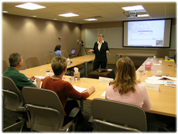

Developing inservice activities to improve performance
We create instructionally sound multimedia training to help organizations improve performance and achieve in the most effective way. We match the instruction to the need, tailoring it to the client’s objectives and audience. Over the years, our face-to-face and online training have reached and empowered thousands of people.